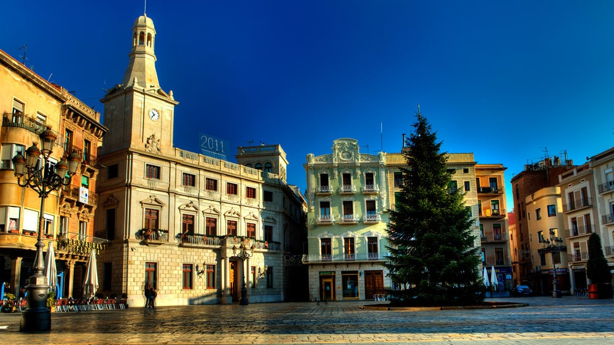
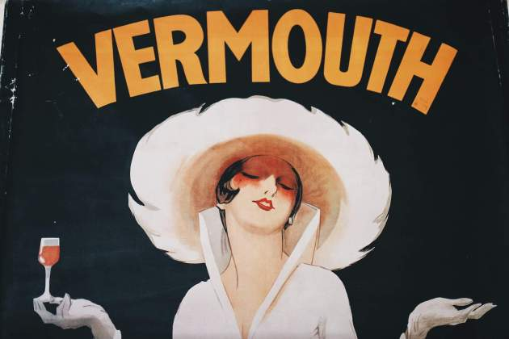
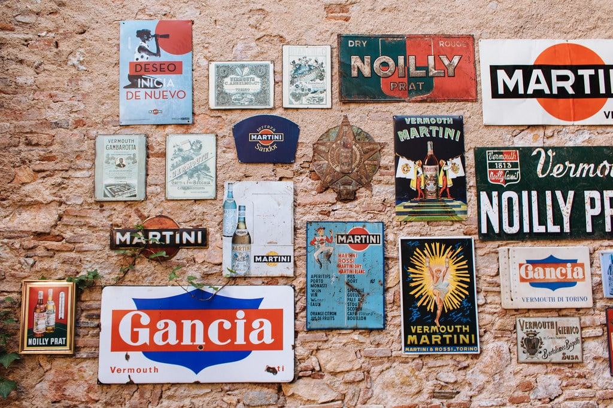
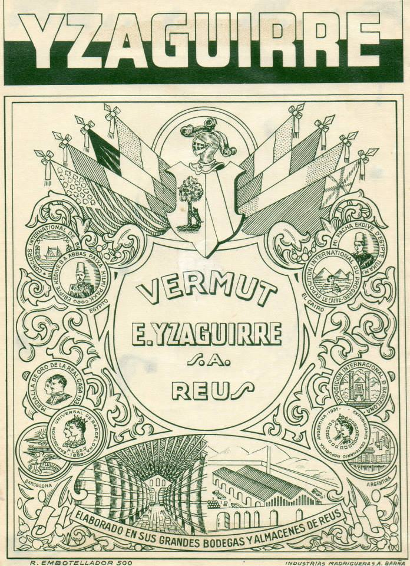

Reus, París, Londres: cuando una ciudad catalana cotizaba con las grandes capitales
Hay frases que sobreviven a los siglos porque condensan algo verdadero. "Reus, París, Londres" es una de ellas. En el siglo XVIII, el precio mundial del aguardiente se fijaba en tres plazas: París, Londres y Reus. No era una hipérbole ni un chiste local: era la realidad de los mercados. La ciudad tarraconense exportaba a medio mundo y sus comerciantes se codeaban, en términos económicos, con las dos capitales más importantes de Europa.
Lo que vino después fue aún más interesante. Las familias enriquecidas con el aguardiente reinvirtieron sus beneficios en el sector vitivinícola justo cuando Europa descubría una nueva bebida: el vermut. El encaje fue casi perfecto. Reus tenía bodegas, técnica, redes comerciales y, sobre todo, una materia prima excelente. Entre finales del siglo XIX y principios del XX llegaron a coexistir más de treinta elaboradores que producían más de cincuenta marcas distintas. Una cifra que convirtió la ciudad en la capital indiscutible del vermut.

La Plaça del Mercadal de Reus · El escenario natural del aperitivo desde hace más de un siglo
Qué es exactamente el vermut y de dónde viene
El nombre viene del alemán wermut, que significa ajenjo: la planta que históricamente ha dado al vermut su carácter amargo y su complejidad aromática. La bebida en sí, sin embargo, tiene una historia más larga. Los griegos ya aromatizaban el vino con hierbas, los romanos lo perfeccionaron, y fue en el siglo XVIII cuando los italianos —especialmente en Turín— lo convirtieron en la bebida burguesa por excelencia, la que acompañaba tertulias, conciertos y conversaciones de calidad.
El vermut llegó a Cataluña a mediados del siglo XIX de manos francesas. Y encontró en Reus el terreno perfecto: vino blanco de macabeo como base neutra, una tradición de maceración con botánicos y destilación ya asentada, y una red comercial capaz de distribuir el producto por toda España y más allá. El resultado fue una bebida que combinaba el origen europeo con el carácter mediterráneo del Camp de Tarragona. Distinta a la italiana, distinta a la francesa, inconfundiblemente propia.


Los nombres que hicieron grande al vermut de Reus
Yzaguirre · Des de 1884 · El Morell
La más antigua de las casas todavía activas. Fundada en Reus en 1884 por Enrique Yzaguirre, elabora vermut con una fórmula que combina cerca de 80 hierbas y especias seleccionadas entre botánicos mediterráneos y alpinos. El proceso incluye maceración en caldera de doble pared durante 14 horas, reposo en frío durante dos meses y envejecimiento en barricas y bocoyes de roble. Su referencia más selecta, el Selección 1884, envejece entre dos y tres años y se embotella en series limitadas de 6.000 botellas. Una de las pocas bodegas del mundo que puede presumir de más de ciento cuarenta años elaborando el mismo producto con la misma convicción.

Anuncio histórico de Vermut E. Yzaguirre S.A. · Elaborado en sus grandes bodegas y almacenes de Reus
Vermuts Miró · Des de 1914 · Reus
Fundada en 1914 en Cornudella de Montsant como empresa de vino a granel, se trasladó a Reus en 1957 y con el tiempo se especializó en el vermut embotellado. Su Vermouth Rosso se convirtió en uno de los más reconocidos de España. La fórmula original, secreto de familia desde hace más de un siglo, combina más de 70 hierbas mediterráneas y alpinas. Hoy elaboran productos en más de treinta países y siguen siendo una de las cinco marcas de referencia estatal en vermut. En 2020 fueron adquiridos por el grupo Masergrup, que mantiene la producción en Reus y la esencia de la fórmula intacta.
Vermuts Rofes · Des de 1890 · Reus
Una de las marcas pioneras. Marcel·lí Rofes Sancho comenzó a elaborar en 1890 en la calle Sant Vicenç de Reus, donde la fábrica estuvo en funcionamiento hasta 2007. Hoy ese mismo espacio es un restaurante que conserva las enormes botas originales y ofrece el Vermut Experience: una cata guiada que recorre el origen y los secretos de la fórmula familiar, transmitida de padres a hijos durante cuatro generaciones. El vermut actual se elabora en la bodega De Muller, que también produce el famoso vi de missa, el vino litúrgico que beben en la misa papal del Vaticano.
Vermut Iris · Cori · Or del Camp · El relevo contemporáneo
Junto a las casas históricas, Reus ha visto crecer en los últimos años una nueva generación de elaboradores. Vermut Iris, con fórmula que data de 1850 y elaborado por la bodega De Muller, ha sumado premios Vinari y mantiene tres referencias: Blanco, Dorado y Reserva. Cori es la marca propia del Museo del Vermut, disponible en blanco y negro, que ha encontrado su público entre quienes descubren la cultura del aperitivo reusense por primera vez. Or del Camp, la apuesta de la cooperativa Cellers Unió desde 2018, demuestra que la tradición no está reñida con la escala cooperativista. Todas ellas, bajo el paraguas de la marca Vermut de Reus, un organismo que regula quién puede acogerse a la denominación y en qué condiciones.
Fer un vermut no es simplemente ir a tomar algo. Es compartir, es un rito que une. Se toma con aceitunas, boquerones, patatas. Con calma. Con el tiempo que hace falta. Así fue siempre en Reus y así sigue siendo.
Cultura popular del Baix Camp · Tradición viva
«Fer un vermut»: cuando una bebida es también una forma de vivir
En catalán, fer un vermut no significa exactamente "tomar un vermut". Significa hacer el ritual completo: la copa, sí, pero también las aceitunas, los boquerones, la patata frita, las almendras, el tiempo compartido con quien tienes al lado. Es el aperitivo mediterráneo en su expresión más pura. Y en Reus es más que una costumbre: es una identidad.
Las terrazas de la Plaça del Mercadal son el escenario central de ese ritual desde hace más de un siglo. A su alrededor, el casco histórico de Reus ofrece hasta 26 edificios modernistas —más que en ninguna otra ciudad española fuera de Barcelona— levantados en parte gracias a la riqueza generada por el comercio del vermut y el aguardiente. El dinero corría con la misma fluidez que el vermut, y las familias burguesas lo invirtieron en arquitectura. La conexión entre la copa y el modernismo no es metafórica: es literal y documentada.
Y nosotros tambiénEl vermut, aperitivo de la asociación
Los Gourmets de Tarragona tenemos la suerte de vivir en el territorio donde esta historia ocurrió. Reus está a un paso, y en más de una ocasión el vermut ha presidido los momentos previos a nuestras visitas gastronómicas: esa media hora antes de sentarse a la mesa donde todo empieza a tomar temperatura. Un Yzaguirre con naranja, una aceituna de l'Arbeca, la conversación que se abre. La mejor manera de entender por qué Reus, París y Londres fueron, durante mucho tiempo, la misma frase.
Fuentes consultadas: El Nacional, Escapada Rural, Diari Mes, Trendencias, VermutMiró, Bodegues Yzaguirre, Vinetur, Museu del Vermut de Reus
Más artículos de gastronomía y vinos
 Curiositats
Curiositats
Jean Leon · El taxista de Beverly Hills que cambió el vino español
Ceferino Carrión cruzó los Pirineos a pie y sirvió la última cena a Marilyn Monroe. Su legado: el primer Cabernet Sauvignon de España.
Leer → Vinos
Vinos
Els Cinc Magnífics · DOQ Priorat
Cinco forasteros, un territorio abandonado y la convicción de que de aquella tierra negra podía nacer un vino que el mundo nunca había probado.
Leer →